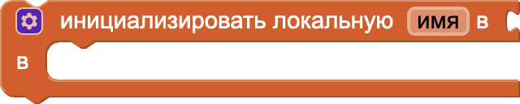
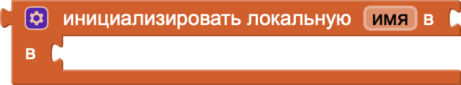

Блоки переменных в MIT App Inventor
Блоки переменных в MIT App Inventor используются для хранения, изменения и передачи данных в приложении. Они позволяют создавать и управлять переменными, которые могут содержать текст, числа, списки или другие типы данных. С помощью этих блоков можно задавать значения переменным, изменять их в процессе выполнения программы и использовать для расчётов, условий или передачи информации между блоками. Переменные помогают организовать логику приложения и делают работу с данными более гибкой и удобной.
- initialize global name to (инициализировать глобальную переменную): Этот блок создаёт глобальную переменную с указанным именем и значением, доступную во всём проекте.
- set (установить): Этот блок изменяет текущее значение переменной.
- initialize local name to - in (do) (инициализировать локальную переменную в блоке do): Этот блок создаёт локальную переменную с указанным именем и значением, которая доступна только внутри указанного блока действий.
- initialize local name to - in (return) (инициализировать локальную переменную в блоке return): Этот блок создаёт локальную переменную с указанным именем и значением, которая используется для вычислений внутри функции, возвращающей значение.
- get (получить): Этот блок возвращает текущее значение переменной (глобальной или локальной).
Блоки 1-го уровня
Инициализировать глобальную переменную (имя) значением
(значение)
Блоки 2-го уровня первого типа
Установить переменную (имя) равной (новое значение)

Инициализировать локальную переменную (имя) значением
(значение)
в блоке (действие)
в блоке (действие)
Блоки 2-го уровня второго типа

Инициализировать локальную переменную (имя) значением (значение)
в блоке (возвращаемое значение)
в блоке (возвращаемое значение)
Блоки 3-го уровня
Получить значение переменной (имя)